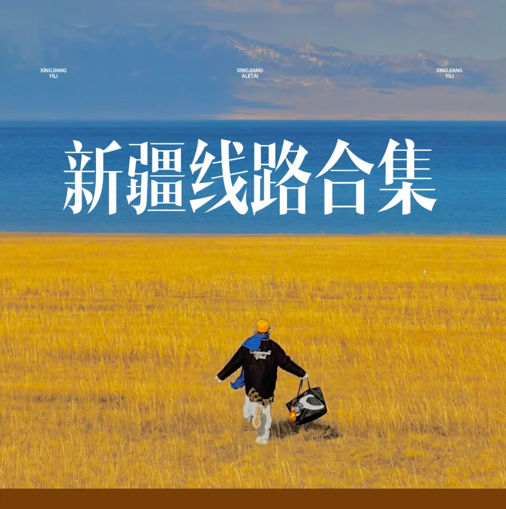
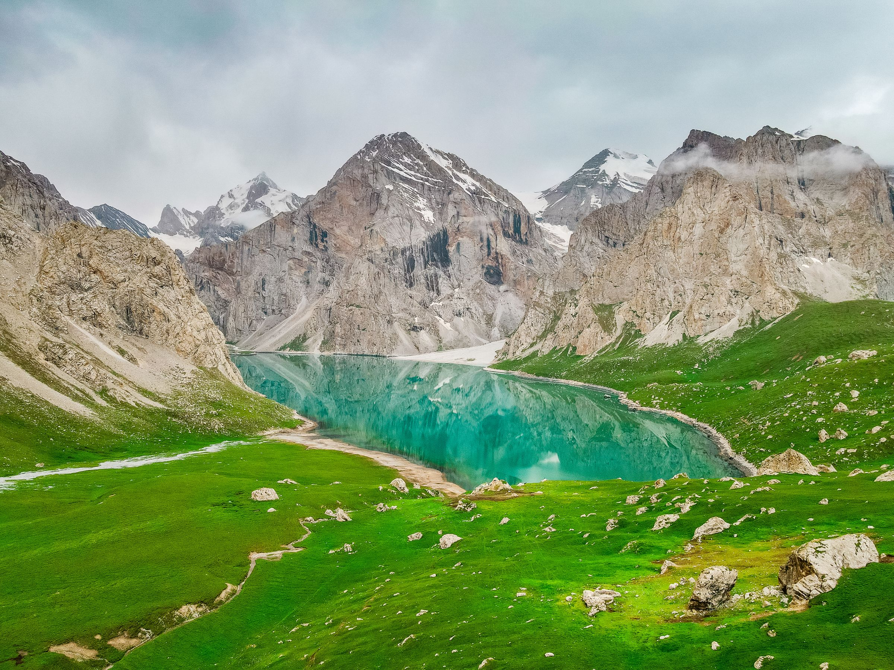

新疆线路合集
 SH08
SH08蓝调双湖
双湖 8 日 · 1+1 头等舱
- 蓝调双湖 8 日
- 1+1 头等舱
8 日
蓝调双湖▼点击了解详细行程▼

SH10至尊双湖
双湖 8 日 · 赛湖五钻版
- 至尊双湖 8 日
- 1+1 头等舱
- 赛湖五钻版
8 日
赛湖五钻版▼点击了解详细行程▼
 2—6 人团SH13
2—6 人团SH13全域双湖
喀纳斯 · 禾木 · 白哈巴 · 赛里木湖
- 喀纳斯、禾木、白哈巴、赛里木湖
- 禾木 + 白哈巴双景区木屋
- 七座商务车，1+1 独立座椅
- 乌鲁木齐集散，8 天 7 晚
乌鲁木齐起止 8天7晚
2—6 人团▼点击了解详细行程▼